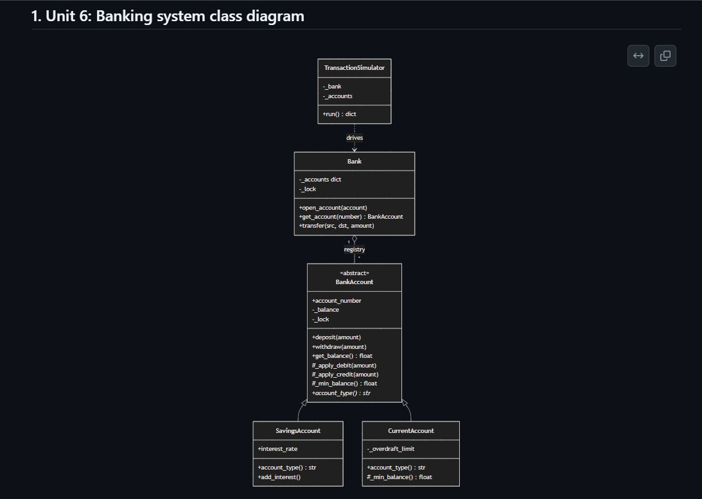
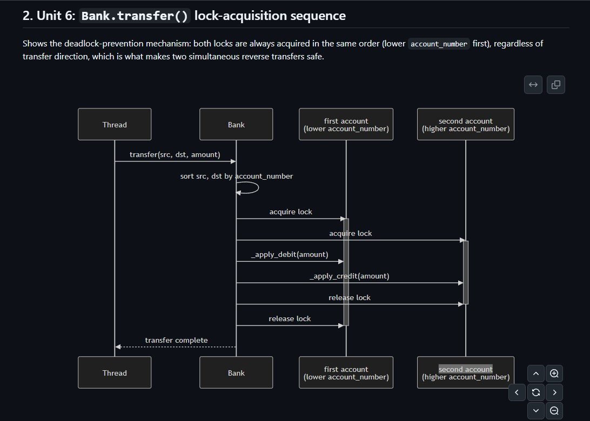
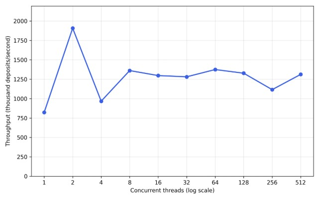
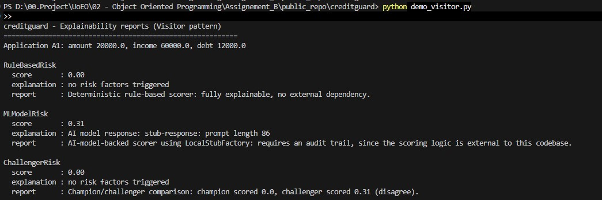
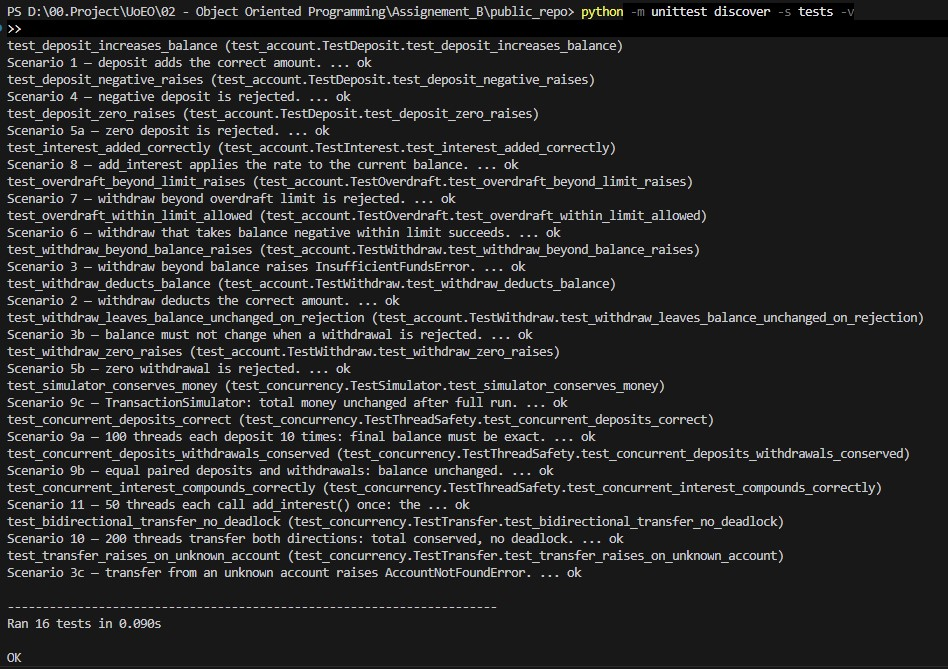
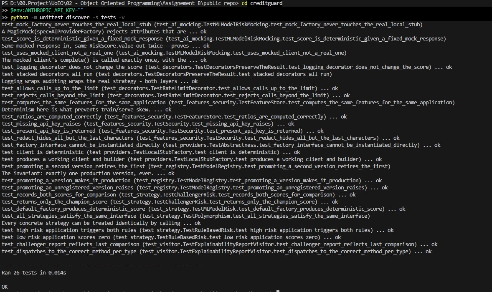

e-Portfolio: Advanced Object-Oriented Design and Programming
Skills & Techniques Learned
Each skill links to where it is demonstrated below.
Learning Journey
- Concurrency & thread safetyObjectiveBuild a banking system safe under simultaneous accessResultPer-account RLock and canonical lock ordering: correct balances, no deadlock
- Advanced object-oriented designObjectiveApply abstraction, inheritance, polymorphism and encapsulationResultAbstract accounts, polymorphic rules, strictly encapsulated state
- Design patternsObjectiveWrite reusable, maintainable, flexible codeResultStrategy, Decorator, Visitor and Abstract Factory in one coherent capstone
- AI-oriented architectureObjectiveDesign architectures adaptable to AI modelsResultProvider factory, model registry and feature store
- Secure codingObjectiveApply secure coding practicesResultBoundary validation, secrets read from the environment, log redaction
- Testing & mockingObjectiveEnsure robustness without a live AI serviceResult42 tests, the AI path mocked and tested fully offline
Module: AOODP25_PCOM7E · University of Essex Online
Repository: github.com/dd26291-essex/aoodp25-pcom7e-portfolio
This e-Portfolio showcases the artefacts produced during the module and the learning outcomes they evidence. It is anonymised for marking. Each artefact is presented as a code snippet, a screenshot of it running, and a short commentary on why it was built the way it was.
1Introduction
The module's work centres on two connected artefacts: a thread-safe banking system built for Unit 6, and an AI-assisted credit-decisioning capstone, creditguard, that extends it to demonstrate advanced design patterns and AI-oriented architecture. This portfolio maps each of the four module learning outcomes to the artefact that proves it, then showcases the artefacts individually with their trade-offs. All code, tests, and diagrams are in the linked repository.
2Learning Outcomes Achieved
Secure coding practices. Boundary validation is enforced at the point data enters the system, not scattered across downstream logic (Shah, 2023). LoanApplication.__post_init__ rejects a non-positive amount or income and a negative debt figure the instant an object is constructed, so no strategy, decorator, or visitor built afterwards ever needs to defend against malformed input. security.py extends this principle to secrets: get_api_key() reads credentials from an environment variable and raises MissingAPIKeyError if one is absent, so a key can never be committed as a literal into version control, and redact() masks all but the last four characters of any identifier before it reaches a log (OWASP, 2021).
Advanced object-oriented principles applied to complex problems. The thread-safe banking system is the primary evidence: an abstract BankAccount enforces a contract through @abstractmethod account_type(), SavingsAccount and CurrentAccount extend it through inheritance, and _min_balance() resolves polymorphically depending on which subclass is asked. Encapsulation is enforced strictly rather than by convention (Martin, 2003): the balance is private, and every change to it is confined to BankAccount itself through _apply_debit and _apply_credit. The capstone applies the same principle in a different form, using immutable frozen value objects whose fields cannot be altered after construction. Demonstrating encapsulation in two distinct ways, mutable but guarded and immutable by construction, shows it is a spectrum of enforcement rather than a single technique.
Design patterns for reusable, maintainable, flexible code. Four patterns (Gamma et al., 1994) were implemented in a single coherent capstone rather than as unconnected exercises, and each is linked to a specific engineering property rather than to its textbook definition. Strategy gives runtime behavioural flexibility: the risk-scoring algorithm is swappable while the caller stays unchanged. Decorator and Visitor give separation of concerns: cross-cutting behaviour and reporting are added without touching the classes they extend. Abstract Factory gives scalability and extensibility: a new AI provider is a new factory, not an edit to existing code. Building the four in one system, rather than as isolated demonstrations, showed how patterns compose, and where they conflict, in a way that four separate exercises could not.
Architectures adaptable to AI models and efficient for data science tasks. MLModelRisk delegates its decision to an external AI provider while remaining interchangeable with a rule-based alternative, and test_ai_mocking.py proves this AI-dependent path is testable with unittest.mock and zero live API calls. A ModelRegistry tracks model versions and enforces that promoting a new version to production retires the previous one, and a FeatureStore is the single point of truth for features across training and serving, addressing train-serve skew (Sculley et al., 2015). Both follow responsible-AI engineering practices (Lu et al., 2024).
3Artefacts
The banking/ package is the Unit 6 coding exercise, creditguard/ is the capstone, and both carry their own test suites (sixteen and twenty-six tests respectively, all passing). The repository documents the architecture visually with a UML class diagram, a sequence diagram of the lock-acquisition order in Bank.transfer(), and a class diagram of how the capstone's patterns relate.
3.1Thread-Safe Banking System
The Unit 6 banking system is the required thread-safe Python artefact. Each account guards its balance with a threading.RLock, and Bank.transfer() acquires two account locks in a canonical order to prevent the circular wait that would otherwise deadlock two opposing transfers (Coffman et al., 1971). A design choice worth drawing out is how the system encapsulates balance mutation: rather than let Bank change an account's balance directly, every change is routed through _apply_debit and _apply_credit on BankAccount.
def _apply_debit(self, amount):
# caller holds self._lock; Bank.transfer holds both account locks
if self._balance - amount < self._min_balance():
raise InsufficientFundsError(self._balance, amount)
self._balance -= amountHolding both account locks across the debit and the credit gives a transfer its atomicity, while routing the arithmetic through these methods keeps the account the only object able to alter its own state. Reconciling cross-object coordination with single-object encapsulation is the more interesting design tension in a transfer than the locking itself.
The system's behaviour under contention is the most instructive result. Running five thousand deposits per thread against a single shared account, at thread counts from one to five hundred and twelve, throughput rises to roughly one million operations per second by eight threads and then stays flat regardless of how many more threads are added. This is not the lock-contention collapse a compiled-language implementation would show. In CPython the Global Interpreter Lock already serialises bytecode execution, so the per-account lock guarantees correctness but is not what bounds throughput (Python Software Foundation, 2024). The practical implication is that a higher-throughput version would need multiple processes or a different runtime, not a different lock.
Figure 1. UML class diagram and the Bank.transfer() sequence diagram.


Figure 2. Throughput versus thread count.

3.2Strategy Pattern
Strategy makes the risk-scoring algorithm interchangeable at runtime. RiskStrategy declares one method, score(application), and RuleBasedRisk (deterministic rules) and MLModelRisk (delegated to an AI provider) each implement it. Calling code holds a RiskStrategy and never changes when the algorithm behind it does, which is the runtime behavioural flexibility the module asks the pattern to demonstrate (Gamma et al., 1994).
class RiskStrategy(ABC):
@abstractmethod
def score(self, application: LoanApplication) -> RiskScore: ...The pattern was chosen over a single method with an internal branch because a branch couples every algorithm into one place and forces that method to change whenever a new scorer is added, whereas a new RiskStrategy subclass leaves existing, tested code untouched. The trade-off is a rigid interface: every scorer must return a RiskScore and nothing richer. For interchangeable scorers that trade is worthwhile, and it improves testability directly, since each strategy is unit-tested in isolation.
3.3Decorator Pattern
Decorator adds cross-cutting behaviour to any strategy without subclassing it. LoggingDecorator, AuditDecorator, and RateLimitDecorator each wrap a RiskStrategy, add their own concern, and delegate the actual scoring inward. Because each decorator is itself a RiskStrategy, they stack:
scorer = LoggingDecorator(AuditDecorator(RuleBasedRisk()))This was chosen over adding logging and auditing directly to the scorers because those concerns are orthogonal to scoring and would otherwise be duplicated across every strategy, and over subclassing because the number of subclasses needed grows combinatorially with each independent concern. The AuditDecorator also delivers the transaction-logging capability the Unit 6 feedback had asked for, now as a reusable layer. The trade-off is order sensitivity, since the composition order carries meaning: logging outside auditing records the call before the audit entry, and reversing them reverses that.
3.4Visitor Pattern
Visitor separates a reporting algorithm from the strategy classes it reports on. ExplainabilityReportVisitor produces a plain-language description of any strategy through double dispatch: each strategy's accept(visitor) calls the visit method matching its own type, so the visitor selects behaviour by type without a single isinstance check.
def accept(self, visitor):
return visitor.visit_ml_model(self)The pattern was chosen because explainability reporting is likely to grow, and a new report type can be added as a new visitor without editing any strategy class. The known cost of Visitor is the mirror image of that benefit: adding a new strategy type forces a new visit_ method onto every existing visitor. That trade suits this system, where the set of scoring strategies is small and stable but the demand for different reports over them is open-ended, which is precisely the situation a credit system's compliance function creates.
Figure 3. Explainability-report output, one description per strategy type.

3.5Abstract Factory Pattern
Abstract Factory swaps a whole family of related AI-provider objects coherently. AIProviderFactory produces a matched AIClient and PromptBuilder pair, and LocalStubFactory and AnthropicFactory each supply their own matched pair, so a client built for one provider can never be combined with another provider's prompt builder.
class AnthropicClient(AIClient):
def __init__(self):
self._api_key = get_api_key("ANTHROPIC_API_KEY") # from env, never a literalThe pattern was chosen over constructing a client and builder directly in MLModelRisk because that would hard-code one provider and scatter provider-selection logic through the code. Handing MLModelRisk a factory instead is dependency injection: the choice of provider lives in one place and can be replaced, including replaced by a mock for testing (Taelman et al., 2022). This is the artefact that makes the architecture adaptable to AI models, since adding a provider is a new factory rather than a change to any scorer. The trade-off is the up-front cost of more classes for what is currently two providers, justified only because provider substitution and offline testing are both first-class requirements here.
3.6Model Registry and Feature Store
Two AI-oriented patterns address the operational side of a machine-learning system rather than a single request. The ModelRegistry tracks every registered model version and its lifecycle stage, and enforces one invariant: promoting a version to production automatically retires whichever version was there before, so at most one model is ever live at once.
def promote(self, name, version, stage):
if stage == "production":
for mv in self._versions:
if mv.name == name and mv.stage == "production":
mv.stage = "retired"
...This makes a rollback a registry operation rather than a code redeployment, which is how production systems avoid downtime when a new model misbehaves. The FeatureStore complements it by computing one feature set from a LoanApplication that both training and serving use, so the features a model was trained on are guaranteed to match the features it sees in production. This eliminates train-serve skew, a documented source of silent failure in deployed models (Sculley et al., 2015). Neither pattern is from the classic catalogue; both are conceptual AI-architecture patterns included to show that designing for AI is as much about lifecycle and data consistency as about the request-time algorithm.
3.7Testing: Mocking and AI-Driven Testing
The mocking suite is the artefact that proves the AI-dependent code is testable at all. test_ai_mocking.py substitutes the factory with a MagicMock(spec=AIProviderFactory), so MLModelRisk is exercised with no network, no API key, and no live model, and the test asserts the mocked client was called exactly once with the prompt the builder produced.
mock_factory = MagicMock(spec=AIProviderFactory)
mock_factory.create_client.return_value.complete.return_value = "mocked response"
result = MLModelRisk(factory=mock_factory).score(app)
mock_factory.create_client.return_value.complete.assert_called_once_with("mocked prompt")Using spec=AIProviderFactory matters: it makes the mock reject any method the real interface does not declare, so the test cannot silently drift away from the contract it stands in for. In the vocabulary of test doubles this is a mock, an object that verifies how it was called, as distinct from a stub that merely returns canned values (Meszaros, 2007).
AI-assisted testing tools were used as a support to this work, not a replacement for it. Such tools can generate candidate test cases, suggest edge cases a developer might miss, and speed up regression coverage: the zero-income case that caused a division-by-zero in the rule-based scorer is exactly the kind of boundary an automated edge-case generator surfaces quickly. What the tools cannot do is decide which invariants actually matter. That money is conserved under concurrency, that exactly one model is ever in production, that a rejected withdrawal leaves the balance untouched, these are properties the developer must recognise as worth protecting. Used this way, AI-assisted testing supports object-oriented quality by widening the cases considered, while the design of the invariants stays a human responsibility (Tibi, 2022).
Figure 4. test_ai_mocking.py passing with no API key set, and the full 26-test capstone run.


3.8The Capstone as a Whole
Taken together the patterns give the capstone an architecture that scales by extension rather than modification: a new scorer, decorator, report, or provider is a new class, not an edit to a tested one. The test suite is what makes the system reliable under change, since every pattern and the money-conservation and single-production-model invariants are asserted and reproducible. AI-readiness was designed in through interfaces and dependency injection rather than added afterwards.
On abstraction against over-engineering, there are two places where the design deliberately stops short. AnthropicFactory simulates its response rather than calling a real SDK, because the pattern it demonstrates, coherent provider substitution, is fully proven without a live integration. RuleBasedRisk stops at two rules rather than modelling genuine underwriting, because more rules would demonstrate nothing further about the pattern. Restraint of this kind is a design decision in its own right, and naming where a demonstration should end is as much a part of good judgement as knowing which patterns to apply.
4Collaboration and Independent Working
This is an individual project, and the artefacts above evidence independent work carried to a complete standard: a working capstone, forty-two passing tests, documentation, diagrams, and a reproducible scalability benchmark, all developed and version-controlled independently through a meaningful commit history.
Collaboration is evidenced through the module's discussion activity. A collaborative discussion on secure coding examined a deliberately insecure authentication system, its vulnerabilities (plaintext password storage, an injection-style logic flaw, a weak password policy, missing input validation, and no rate limiting), and how to refactor it safely with hashing, boundary validation, and rate limiting. Presenting an analysis in writing and engaging with approaches that reached different conclusions sharpened the reasoning behind each design choice, since a security judgement is only as sound as its ability to survive being questioned. That exchange fed directly into the secure-coding boundaries in security.py, where API keys are read from the environment and identifiers are redacted before logging.
5Repository and Links
- GitHub repository: github.com/dd26291-essex/aoodp25-pcom7e-portfolio
- Banking system: banking/ and the combined banking_system.py (16 tests)
- Capstone: creditguard/ (26 tests, including the mocking suite)
- Diagrams and chart: diagrams/
Run the tests: python -m unittest discover -s tests -v (banking) and the same in creditguard/.
References
Anthropic (2026) Claude (claude-opus-4-8). Available at: https://claude.ai (Accessed: 17 July 2026). [The front-end of this e-Portfolio site (HTML, CSS and JavaScript) was built with assistance from Claude, reviewed and understood by the author.]
Coffman, E.G., Elphick, M. and Shoshani, A. (1971) 'System deadlocks', ACM Computing Surveys, 3(2), pp. 67–78. Available at: https://doi.org/10.1145/356586.356588 (Accessed: 16 July 2026).
Gamma, E., Helm, R., Johnson, R. and Vlissides, J. (1994) Design Patterns: Elements of Reusable Object-Oriented Software. Boston, MA: Addison-Wesley.
Lu, Q., Zhu, L., Xu, X., Whittle, J., Zowghi, D. and Jacquet, A. (2024) 'Responsible AI Pattern Catalogue: A Collection of Best Practices for AI Governance and Engineering', ACM Computing Surveys, 56(7), pp. 1–35. Available at: https://doi.org/10.1145/3626234 (Accessed: 16 July 2026).
Martin, R.C. (2003) Agile Software Development: Principles, Patterns, and Practices. Upper Saddle River, NJ: Prentice Hall.
Meszaros, G. (2007) xUnit Test Patterns: Refactoring Test Code. Upper Saddle River, NJ: Addison-Wesley.
OWASP (2021) OWASP Top 10:2021. Available at: https://owasp.org/Top10/ (Accessed: 16 July 2026).
Python Software Foundation (2024) threading — Thread-based parallelism. Python 3.13 Documentation. Available at: https://docs.python.org/3/library/threading.html (Accessed: 16 July 2026).
Sculley, D., Holt, G., Golovin, D., Davydov, E., Phillips, T., Ebner, D., Chaudhary, V., Young, M., Crespo, J.-F. and Dennison, D. (2015) 'Hidden technical debt in machine learning systems', Advances in Neural Information Processing Systems, 28, pp. 2503–2511.
Shah, M. (2023) Cloud Native Software Security Handbook. Birmingham: Packt Publishing.
Taelman, R., Van Herwegen, J., Vander Sande, M. and Verborgh, R. (2022) 'Components.js: Semantic dependency injection', Semantic Web, 14(1), pp. 135–153. Available at: https://doi.org/10.3233/SW-222945 (Accessed: 17 July 2026).
Tibi, A. (2022) Pragmatic Test-Driven Development in C# and .NET. Birmingham: Packt Publishing.